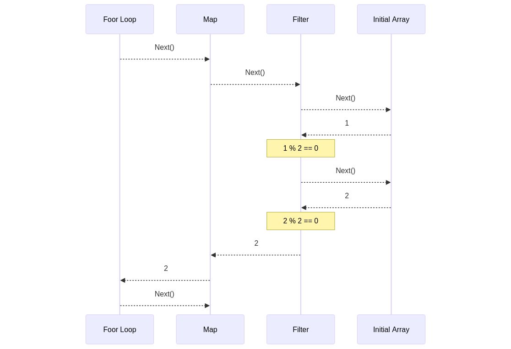

One of my hobbies has been extensively working with Rust in embedded development. Over time, I've observed that many embedded developers transitioning from C to Rust often underutilize the language's features, leaving room for code improvement. Here are some recommendations for those starting out.
Not utilizing generics or traits
Harnessing the power of generics can revolutionize your project. For instance, I saw a few times, embedding GPIO information into the implementation. This makes testing trickier and tightly couple the code to the target board, posing challenges for updating it with new releases.
Consider this example of a motor struct:
pub struct Motor {
action_pin: gpio::PB6,
direction_pin: gpio::PB8
...
}
The main issue with this approach is its difficulty in debugging and testing. The internal structures are tightly coupled to the board-hal structs, limiting reusability for multiple motors.
An alternative approach is using generics, where the action and direction pins only need to implement a trait, such as those from embedded_hal.
use embedded_hal::digital::v2::OutputPin;
use embedded_hal::PwmPin;
pub struct Motor<A: OutputPin, B: OutputPin, P: PwmPin<Duty = u16>> {
action_pin: A,
direction_pin: B,
...
}
This allows for the reuse of the struct with different pins and enables unit testing without the need for a physical board, as you can see in the following example:
mod tests {
use super::*;
use mockall::predicate::*;
use mockall::*;
mock! {
FakePin {}
impl OutputPin for FakePin {
type Error = u32;
// Required methods
fn set_low(&mut self) -> Result<(), u32>;
fn set_high(&mut self) -> Result<(), u32>;
}
}
#[test]
fn test_motor_forward() {
// given
let mut action_pin = MockFakePin::new();
action_pin.expect_set_low().times(0).returning(|| Ok(()));
action_pin.expect_set_high().times(1).returning(|| Ok(()));
let mut direction_pin = MockFakePin::new();
direction_pin.expect_set_low().times(1).returning(|| Ok(()));
direction_pin
.expect_set_high()
.times(0)
.returning(|| Ok(()));
// when
let mut motor = Motor::new(action_pin, direction_pin);
motor.forward();
}
}
This setup allows validation that the action and direction pins are called correctly when motor.forward() is invoked. Moreover, in the case of a car with multiple motors, the same struct can be used to initialize both.
let motor_left = Motor::new(
gpiob.pb10.into_push_pull_output(&mut gpiob.crh),
gpiob.pb12.into_push_pull_output(&mut gpiob.crh),
);
let motor_right = Motor::new(
gpiob.pb9.into_push_pull_output(&mut gpiob.crh),
gpiob.pb8.into_push_pull_output(&mut gpiob.crh),
);
Hence, leveraging generics is crucial when transitioning to Rust.
Take advantage of iterators
Iterators are among Rust's best features, providing a functional programming approach and efficient array iteration.
For example, when sending bits over the wire, if the input data can vary in size, defining it as an iterator allows reusing the send_data function across actions:
Consider the following example:
fn action_down_blind() {
let data = [
[0x5c, 0xb3, 0xff, 0xbc, 0xf4].iter(),
[0x5c, 0xb3, 0xb8, 0xcb, 0xf4].iter(),
[0x5c, 0xb3, 0xb8, 0xcb, 0xfe, 0xff, 0xbc, 0xf4, 0x7f].iter(),
];
data.map(|x| send_data(x));
}
fn send_data<'a, I>(mut data: I)
where
I: Iterator<Item = &'a u8>,
{
for element in data {
// do stuff
}
}
Iterators also excel in terms of memory efficiency. For instance, in the following code:
fn int_to_binary_array(num: u8) -> [u8; 8] {
let mut result = [0; 8];
for i in 0..8 {
result[7 - i] = (num >> i) & 1;
}
result
}
fn test_iter() {
let data = [0, 1, 2, 3, 4, 5, 6];
let filtered_results = data
.iter()
.filter(|&&x| (x % 2) == 0)
.map(|&x| int_to_binary_array(x));
for element in filtered_results {
//do stuff
}
}
The filter function checks if the modulo of 2 is 0 for each element in the input. the map function returns its binary representation without allocating new arrays, thanks to iterators traits from the core crate. The following sequence diagram explains how it works.
Not using cargo workspaces
When operating in non-std mode, unit testing becomes trickier as Rust's testing framework relies on std crates, and some ARM targets does not have std at all. My recommendation is to split programs into two packages: one for the board-specific logic and the other for the main code, importing only embedded-hal traits as dependencies.
For example, create two folders:
- blackpill for the non-std requirements and target delivery to the board.
- libs for the main code, with the sole embedded-hal dependency.
Inside the blackpill/cargo.toml, a new dependency should be added:
[dependencies]
....
libs = { path = "../libs/" }
On the libs section, the following points are important:
- Skip the non-std requirement when non using test. For that the following macro can be enabled in the code, so you can take advantage of multiple std apis.
#![cfg_attr(not(test), no_std)]
- Your only embedded dependency should be embedded-hal. Aim to work with public traits and keep as much logic as possible here to decouple your code from the target board or peripheral.
- For any special dependencies not covered by embedded-hal traits, consider creating a trait and implementing it in the board code.
Full example of the workspace can be found here.
These are common pitfalls I've observed in embedded Rust code. I hope these tips help you write better code.